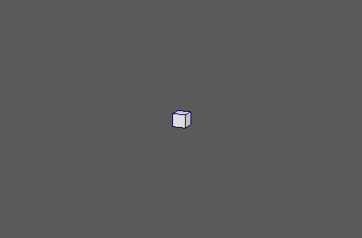
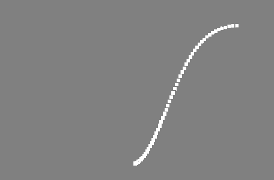
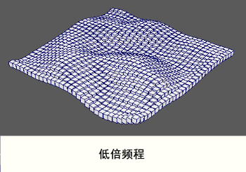
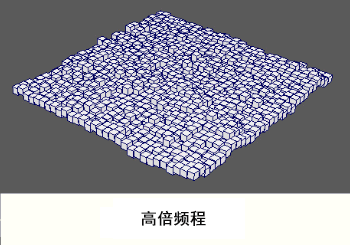
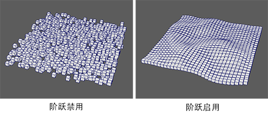

使用 4D 柏林噪波或三角函数为网络中的点设置动画。
-
信号类型(Signal Type)
-
确定驱动动画的函数。选项包括：
- 4D 噪波(4D Noise)：有机纹理类似于大理石、木材、云、火等的渐变噪波（柏林）。
- 循环噪波(Looping Noise)：“4D 噪波”(4D Noise)的可循环版本。
- 分形布朗运动(Fractional Brownian Motion)：也称为“湍流”。类似于“4D 噪波”(4D Noise)，但是对象将加速减速。
- 三角测量(Trigonometry)：一个三角函数。
-
变换空间(Transformation Space)
-
确定是相对于点的共享“世界”(World)空间还是其各自的“局部”(Local)空间变换点。
位置
-
位置 X(Position X)、位置 Y(Position Y)、位置 Z(Position Z)
-
指定信号影响点平移的程度。
旋转
-
旋转 X(Rotation X)、旋转 Y(Rotation Y)、旋转 Z(Rotation Z)
-
指定信号影响点旋转的程度。
缩放
-
缩放 X (Scale X)、缩放 Y (Scale Y)、缩放 Z (Scale Z)
-
指定信号影响点缩放的程度。
-
均匀缩放(Uniform Scale)
-
沿所有轴均匀缩放点（仅使用“缩放 X”(Scale X)值）。
-
正比例(Positive Scale)
-
确保点仅缩放为正值。
噪波设置
-
倍频程(Octaves)
-
设置噪波倍频程数。值越大，生成的噪波就越详细。

-
持久性(Persistence)
- 每个噪波倍频程的强度。值越大，噪波越混乱。
-
循环帧(Loop Frames)
- 确定噪波循环之前的帧数。仅当将“信号类型”(Signal Type)设置为“循环噪波”(Looping Noise)时才可用。
三角化设置
-
X 函数(X Function)、Y 函数(Y Function)、Z 函数(Z Function)
- 要沿每个轴使用的三角曲线类型。仅当将“信号类型”(Signal Type)设置为“三角测量”(Trigonometry)时才适用。
-
启用阶跃(Enable Step)
-
在时间方向上将每个点的噪波/三角采样偏移“步长”(Step Amount)与点 ID 之积。启用该选项可为每个点提供一个唯一的时间偏移。将其禁用可增强湍流效果。

-
步长(Step Amount)
-
启用“步长”(Step)时要应用于每个点 ID 的倍增。较小的值会导致所有对象具有类似的动画，而较大的值会导致它们明显不同。
-
噪波比例(Noise Scale)
-
缩放噪波或三角函数的频率。
-
噪波比例倍增(Noise Scale Multiplier)
-
分别沿 X、Y 和 Z 轴使“噪波比例”(Noise Scale)的效果倍增。仅当启用“启用阶跃”(Enable Step)时才可用。
-
时间比例(Time Scale)
-
输入对象动画序列的当前“时间”(Time)倍增。用于加速、减慢甚至是反转动画。
-
时间(Time)
-
显示当前帧。
强度
-
强度(Strength)
- 同时减弱对所有对象的节点效果。
-
随机强度(Random Strength)
- 按随机顺序平滑地减弱所有对象的节点效果。
-
阶跃强度(Step Strength)
- 每次禁用一个对象的节点效果。
-
强度贴图(Strength Map)
- 确定输入文件（2D 纹理、动画纹理等）来控制该节点的效果的形状。
-
贴图投影轴(Map Projection Axis)
- 确定投影“强度贴图”(Strength Map)时所沿的轴。
-
贴图辅助对象(Map Helper)
- 显示用于在场景中交互放置“强度贴图”(Strength Map)的对象。可以在该字段上单击鼠标右键来创建新的辅助对象（平面）（如果不存在）。还可以使用鼠标中键将网格拖入此字段，或者单击鼠标右键连接选定网格。如果网格已连接，还可以单击鼠标右键来断开其连接或者将其显示在大纲视图中。
注： 为获得最佳结果，请将相同的纹理指定给“强度贴图”(Strength Map)和“贴图辅助对象”(Map Helper)（在创建新的辅助对象时将自动执行此操作）。
-
变换空间(Transformation Space)
-
确定节点将根据对象的局部空间还是世界空间变换对象。